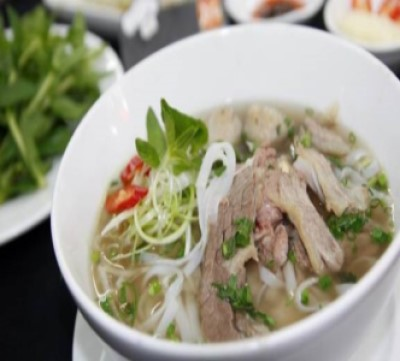
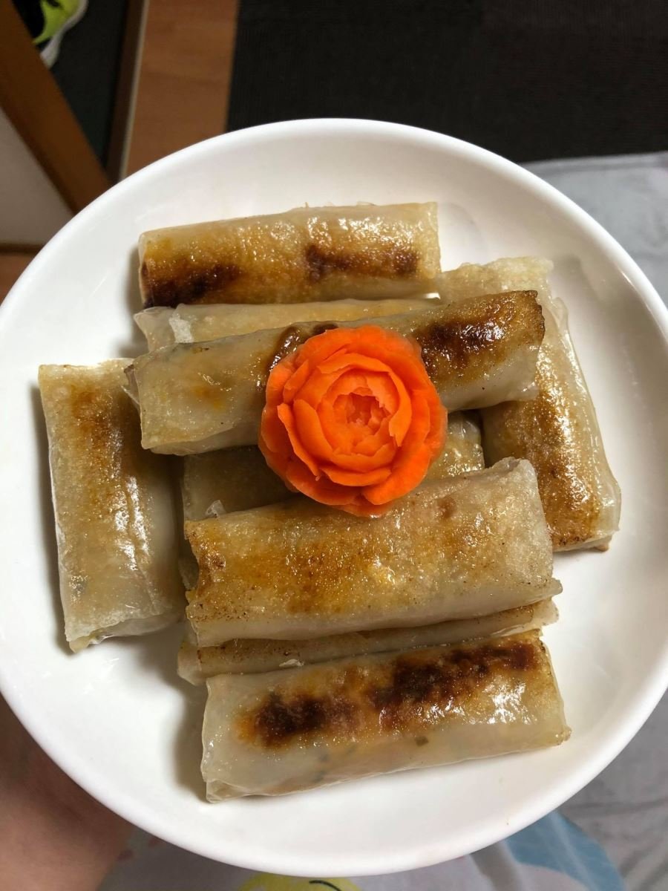

最新の投稿
フォ - 伝統的な料理
フォーはベトナムの伝統的な料理であり、ベトナム料理の最も典型的な料理の1つと見なすこともできます。フォーの主な材料は、ライスヌードルのスープとスープ（または南部ではスープと呼ばれています）と、薄くスライスした牛肉または鶏肉です。さらに... 続き
揚げ春巻き (NEM RAN)
今日では、シーフード揚げ春巻き、ベジタリアン揚げ春巻き、春巻きなど、おいしい揚げ春巻きを作る方法はたくさんありますが、伝統的な揚げ春巻きは今でも北部の人々に愛され、満月の日。伝統的なテットの休日北の春巻きには野菜や果物が多く,春雨もあり...続き
バインミーベトナム
バンミは、フォーと並んで、世界中の多くの国から多くのダイナーを征服してきたベトナムの豊かな料理の傑出した代表者の1人です。我慢できない」は、サウスチャイナモーニングポストがベトナムのパンに捧げた最初の言葉です。バンミは、フォーと並んで... 続き